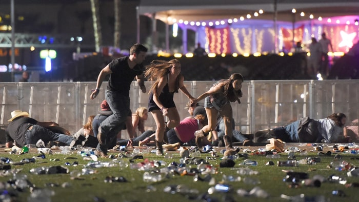

Las Vegas shooting.

At least 58 people were killed and more than 500 were hurt Sunday night when Stephen Paddock rained gunfire on concertgoers in Las Vegas, the deadliest mass shooting in modern US history. At about 10:08 p.m. Sunday, the Route 91 Harvest festival, an outdoor country music concert, was interrupted by the sound of gunfire, witnesses said. Police said the gunman fired on the crowd of about 22,000 people from the 32nd floor of the Mandalay Bay Resort and Casino, several hundred feet southwest of the concert grounds.
• Country music singer Jason Aldean was performing when the gunshots began, according to witnesses' cell phone video. "The gunshots lasted for 10 to 15 minutes. It didn't stop," said witness Rachel de Kerf. Police say Paddock fired for nine to 11 minutes after the first 911 call came in. Paddock set up cameras inside his hotel suite and in the hallway. Police are not aware whether the devices were transmitting.• Authorities identified the shooter as 64-year-old Stephen Paddock of Mesquite, Nevada, a retired and twice-divorced accountant with no known children. Paddock was alive when officers first made contact with him outside suite 32135. After taking gunfire from him, police backed off and waited for SWAT teams to respond. A security guard was shot in the leg. Officers "breached the hotel room" where Paddock was and found him dead, police said. Authorities believe he killed himself. Police said they believe Paddock acted alone. Police say they have not determined Paddock's motives. As such, they are not calling the shooting terrorism -- an attack on civilians to intimidate or coerce society for political purposes. "We have to establish what his motivation was first," said Clark County Sheriff Joseph Lombardo, when asked why the shooting has not been labeled domestic terrorism."